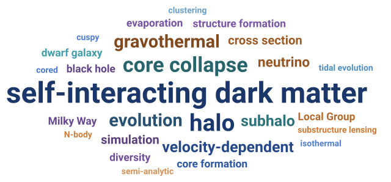

Publications
Updated to

The reference record for my publications is INSPIRE-HEP. As of today, I have – papers and – total citations, including – first-authored papers with – citations. Records are also kept on NASA ADS, Google Scholar and ORCID.
Leading author
cited by: 158-
Bypassed core formation in
Milky Way-mass SIDM halos: implications for the Local Group past-pericenter scenario
· 2026, submitted to Phys. Rev. D · arXiv:2604.08647 · research → -
Diversity and universality:
evolution of dwarf galaxies with self-interacting dark matter
· 2025, Phys. Rev. D · arXiv:2412.14621 · research → -
Till the core collapses:
the evolution and properties of self-interacting dark matter subhalos
· 2025, Phys. Rev. D · arXiv:2310.09910 · research → -
Core-collapse, evaporation and
tidal effects: the life story of a self-interacting dark matter subhalo
· 2022, MNRAS · arXiv:2110.00259 · research → -
Effects of neutrino mass and
asymmetry on cosmological structure formation
· 2019, JCAP · arXiv:1808.00357
Mentored-student papers
cited by: 53Work led by students I have mentored.
-
The sensitivity of substructure
lensing to SIDM core-collapse model variation
· 2026, Phys. Rev. D · arXiv:2605.24174 -
Calibrating the SIDM gravothermal
catastrophe with N-body simulations
· 2025, Phys. Rev. D · arXiv:2504.13004 -
Convergence tests of
self-interacting dark matter simulations
· 2024, Phys. Rev. D · arXiv:2402.01604
Collaborative work
cited by: 217-
MARVELously dark: the gravothermal
evolution of dwarf halos in velocity-dependent SIDM
· 2026, submitted to JCAP · arXiv:2601.23264 -
Tidal evolution of cored and
cuspy dark matter halos
· 2024, Phys. Rev. D · arXiv:2403.09597 -
A quantitative comparison between
velocity-dependent SIDM cross-sections constrained by the gravothermal and isothermal models
· 2024, MNRAS · arXiv:2305.05067 -
Gravothermal solutions of SIDM
halos: mapping from constant to velocity-dependent cross section
· 2023, ApJ · arXiv:2205.02957 -
A semi-analytic study of
self-interacting dark-matter haloes with baryons
· 2023, MNRAS · arXiv:2206.12425 -
Evidence of neutrino enhanced
clustering in a complete sample of Sloan survey clusters, implying
∑mν = 0.119 ± 0.034 eV
· 2017 · arXiv:1711.05210